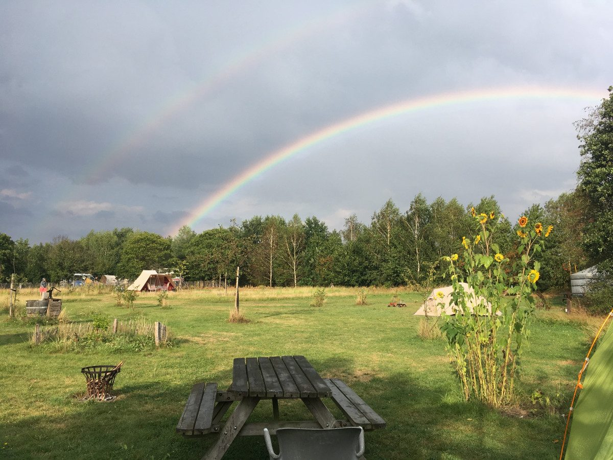
Kampeerplaats
30 plaatsen voor tenten, kleine campers, caravans en andere mooie kampeercreaties. Vooraan open, achterin beschut tussen de bomen.
vanaf € 9,75Meer info
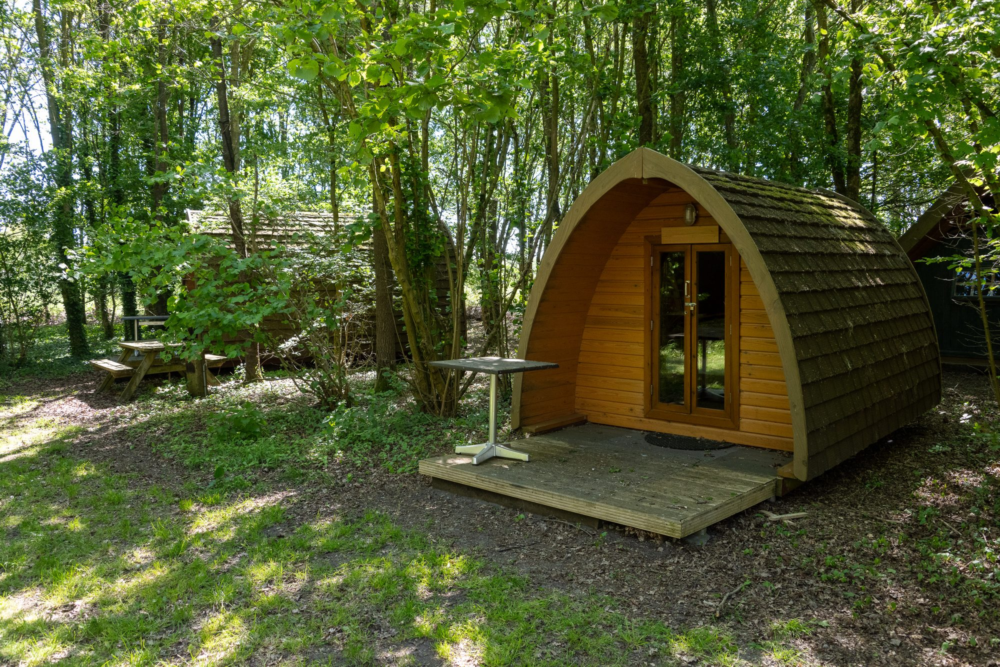
Een klein natuurkampeerterrein in Boswachterij Dorst. Kom met je eigen tent of caravan, of slaap in een houten tent, Panorama pod, tiny house of onze B&B.
Met je eigen tent, caravan of camper, of zonder veel bagage in een van onze houten tenten en huisjes. Klik voor meer informatie.

30 plaatsen voor tenten, kleine campers, caravans en andere mooie kampeercreaties. Vooraan open, achterin beschut tussen de bomen.
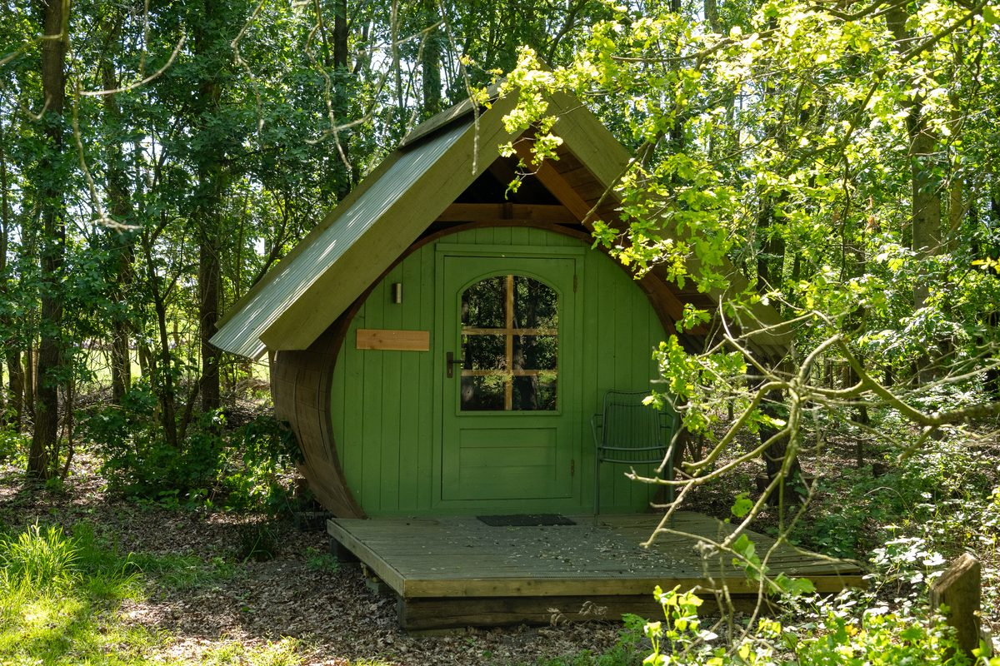
Kamperen zonder veel bagage. Met verwarming, stroom, een tweepersoonsbed en een eigen terrasje.
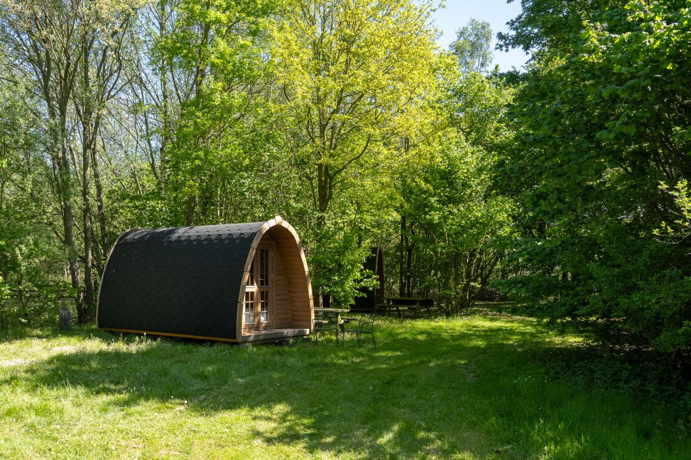
NieuwNet wat ruimer dan de houten tenten, met een groot raam en uitzicht over de natuurvijver of de velden.
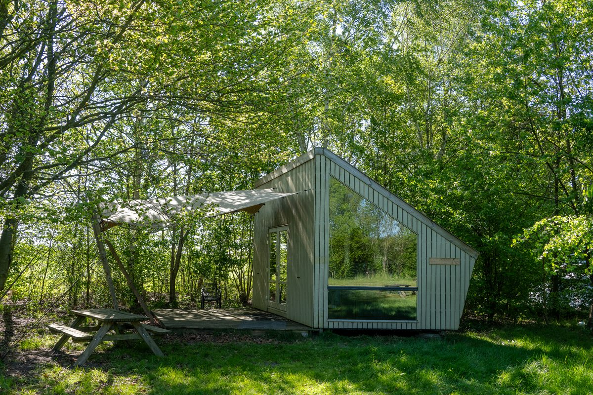
Bijzonder huisje van hergebruikte materialen voor twee tot vier personen, met eigen keuken en toilet.
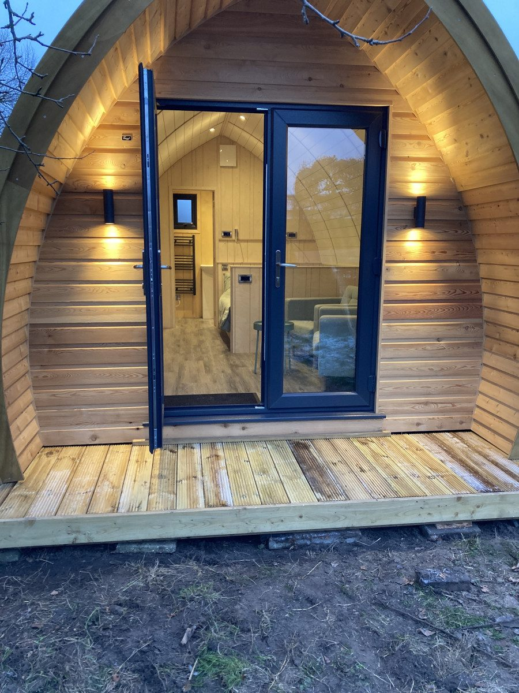
Knus en goed geïsoleerd huisje voor twee, met eigen badkamer, keukentje en een tuintje met vuurplek.
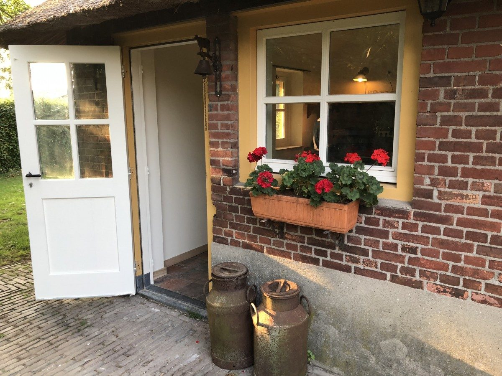
Twee gastenkamers in de oude stal van onze boerderij, elk met eigen ingang, inloopdouche en kookhoek.
Een stuk zelf geplante natuur achter onze boerderij, tussen de weilanden en bossen van Boswachterij Dorst. De natuur de ruimte geven vinden we belangrijk, dus elk hoekje is weer anders.
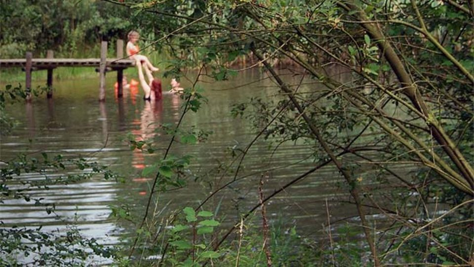
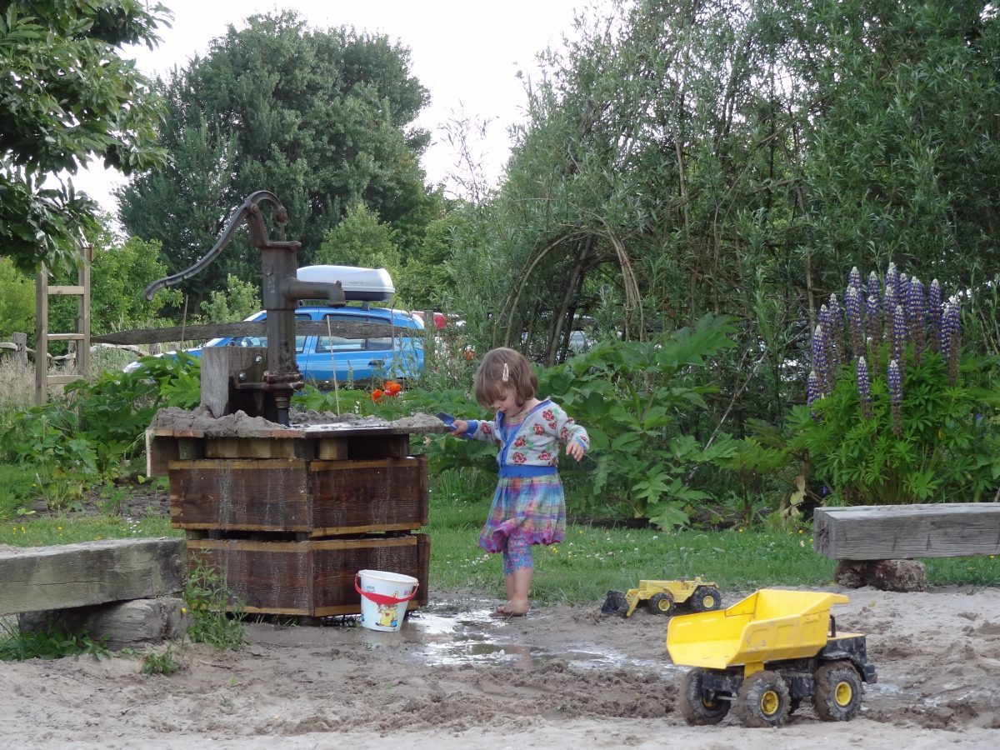
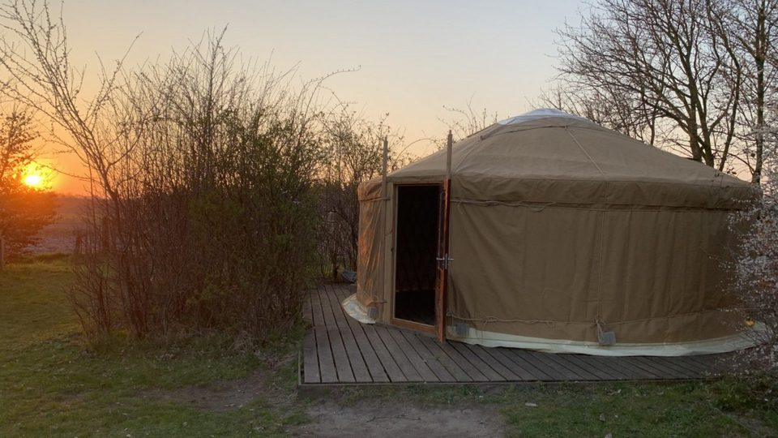
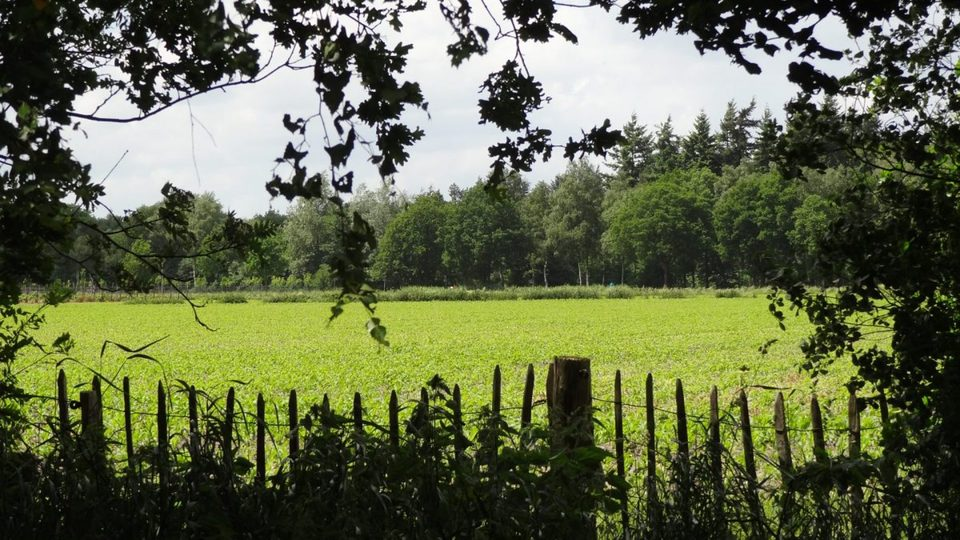
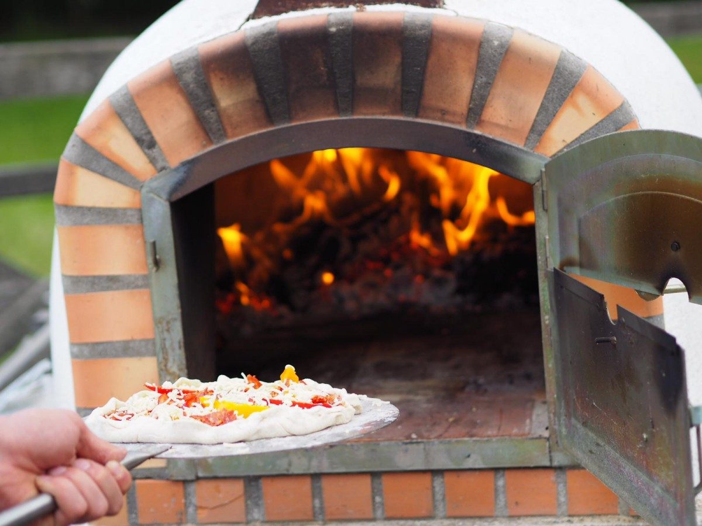
In het seizoen organiseren we regelmatig een avond op het terrein. Dan gaat onze houtgestookte oven aan en maken we de pizza's vers, of staat er een grote pan Indische stoof of chili klaar.
Net aangekomen en geen zin meer om te koken? Dan schuif je gewoon bij ons aan.
"Voor ons kamperen zoals het bedoeld is. Geen animatie maar mooie natuur op de camping."
Ilona · Google"Fantastische houten tenten met verwarming. Heerlijk ontbijt en super aardige gastvrouw."
Joost · Google"Wat een heerlijke plek. Vlakbij, en maar voor 1 nachtje geweest, maar voelde als vakantie en echt weg!"
Marieke · Google"Prachtige benb. Goede prijs kwaliteit verhouding. Heerlijke bedden en douche. Mooie omgeving, vriendelijke eigenaren."
Grace · Google"Schitterende kleinschalige camping met ruime plaatsen. Op loopafstand van de ijsboerderij met de lekkerste ijsjes."
Sjaak · Google"Heerlijke sociale camping zonder opsmuk. Gewoon genieten van de eenvoud."
Ingrid · Google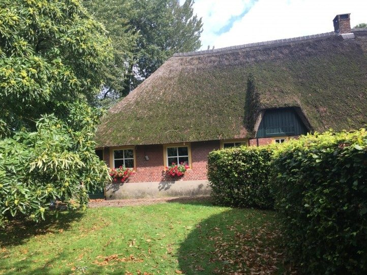
In 2011 begonnen Jan en Lisette het kampeerterrein achter hun boerderij. Hun zoon Guus en Maud kwamen er in 2016 wonen en namen het terrein in 2017 over. We beheren alles zelf en wonen hier met plezier.
Sindsdien is er een nieuw stuk natuur aangelegd, lopen er boerderijdieren rond en kwamen er een B&B en een vakantiehuis bij. Het bos achter het terrein heet van oudsher De Duiventoren, naar het verdwenen slot van de heer van Duijvenvoorde. Het slot is weg, de naam is gebleven.
Maud en Guus
Alle prijzen zijn per nacht. Voor trekkers te voet of op de fiets is er altijd plaats, die hoeven niet te reserveren.
Exclusief toeristenbelasting € 2,- per persoon per nacht.
Exclusief toeristenbelasting: € 2,- (houten tenten en pods) of € 3,- (Trek-In en Yorvik) per persoon per nacht.
Een simpel ontbijt is inbegrepen. Exclusief toeristenbelasting € 3,- per persoon per nacht.
NatuurkampeerkaartOp De Duiventoren is de natuurkampeerkaart verplicht. Het Groene Boekje met kaart (€ 15,95 per gezin) is bij ons te koop.
Aankomst en vertrekKampeerplaatsen van 12.00 tot 12.00 uur. Accommodaties vanaf 15.00 uur, vertrek uiterlijk 11.00 uur.
WeekendenDe B&B-kamers, de Trek-In en de Yorvik zijn in het weekend te boeken vanaf 2 nachten.
HuisdierenHuisdieren zijn op ons terrein niet toegestaan.
Laat weten wanneer je wilt komen en waar je wilt slapen. Je reservering is definitief zodra we die per mail hebben bevestigd.
Met een groep of meer dan 4 plekken? Zet het bij de opmerking, of mail naar info@deduiventoren.nl.
We bevestigen je reservering zo snel mogelijk per mail.
We liggen in het buurtschap Steenoven, tussen Oosterhout, Dorst, Rijen en Dongen.
Maud is het aanspreekpunt voor de camping, het vakantiehuis en de B&B. Bel of mail gerust.
ParkerenLinks van de ingang of naast de boerderij aan de straat. Bij de ingang staan kruiwagens voor je bagage en boodschappen.
Auto's op het terreinAlleen even om in en uit te laden, tot uiterlijk 21.00 uur. Bij nat weer laten we geen auto's op het terrein.
OmgevingDirect achter het terrein begint het bos. Boswachterij Dorst heeft volop wandel- en fietsroutes.